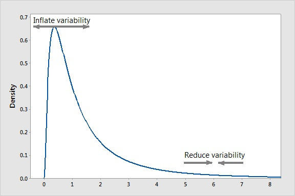

What is a Box-Cox Transformation?
Box-Cox Transformations can help reduce non-constant variance in a dataset.
What is the Business Challenge?
Many times, a dataset contains information that with no adjustment fails to provide accurate information under statistical analysis. Transformations are just one adjustment used to make data more fit for statistical analysis (Reducing skewness, creating linear relationships, etc .)
What is a Box-Cox Transformation?
A Box-Cox transformation is a method to reduce heteroscedasticity, or non-constant variance in data. A Box-Cox transformation will both inflate low variance data and reduce high variance data to create a much more uniform dataset for consumption.

How will Ready Signal Help?
ReadySignal allows you to change your signal to automatically apply a logarithmic transformation to your data. With one click of a button, a signal can be automatically calculating and incorporating log transforms into the data stream.
References
Scibilia, Bruno. “How Could You Benefit from a Box-Cox Transformation?” Minitab Blog, 30 Mar. 2015, blog.minitab.com/blog/applying-statistics-in-quality-projects/how-could-you-benefit-from-a-box-cox-transformation.
Cox, Nicholas J. Fmwww.bc.edu, Durham University, 25 July 2007, fmwww.bc.edu/repec/bocode/t/transint.html.